“Everything should be made as simple as possible, but not simpler.”
— Albert Einstein
Learning Objectives After completing this chapter, you should be able to:
Derive transfer functions from physical laws for electrical (RLC), mechanical (translational and rotational), and thermal systems.
Apply Kirchhoff’s voltage and current laws to obtain circuit equations and convert them to the Laplace domain.
Use the impedance method to derive transfer functions without writing differential equations explicitly.
Apply Newton’s second law to translational and rotational systems, including multi-body and geared configurations.
Identify the electrical–mechanical–thermal analogies and use them to model systems across domains.
Construct and simulate transfer function models in MATLAB using tf(), step(), and lsim().
A model of a dynamical system is a mathematical description that links inputs, internal behaviour, and outputs in a way useful for prediction and control design.
A mathematical model allows us to predict how a system will respond under different conditions before we build hardware or run expensive experiments. Once we have equations that describe the system, we can reason about stability, speed of response, and sensitivity to disturbances in a structured way — rather than relying on trial-and-error.
In safety-critical applications (aerospace, robotics, biomedical devices), models let us test disturbances, parameter variations, and candidate control laws through simulation before anything is deployed. Without a model, controller design becomes guesswork.
Models are abstractions of reality. They are not perfect copies of the physical world, but they are detailed enough to capture the essential dynamics needed for prediction, analysis, and design.
If AI can learn from data, why do we still need mathematical models? AI methods work best when large amounts of reliable data are available and operating conditions match training. In safety-critical systems (aircraft, medical devices, autonomous vehicles), we cannot allow a controller to “learn by making mistakes.” We need predictable behaviour from the start, and that comes from mathematical modelling. Furthermore, at the design stage a new system may have little or no data — physics-based models are then the only tools available.
The most effective solutions often combine both: physics-based models capture the dominant dynamics, while AI compensates for hard-to-model effects like friction or wear. In many industries, regulations require mathematical justification of system behaviour.
Why safety-critical industries demand white-box design
In domains where failure can cost lives — civil aviation, nuclear power, medical devices, autonomous vehicles — industry standards impose a non-negotiable requirement: every component in the control loop must be fully understood, mathematically justified, and independently verifiable. There is no room for black boxes.
Certification frameworks. In aviation, for example, standards such as ARP 4754A , DO-178C , and DO-254 require the development process to be deterministic, auditable, and traceable. The authority reviewing the design must be able to inspect the equations, examine the control law, and verify why each design choice was made.
What “white-box” design means in practice. When a flight control law is submitted for certification, the manufacturer must provide a validated mathematical model of the aircraft, a controller whose gains can be traced back to explicit requirements, evidence that the closed-loop system remains stable throughout the operating envelope, and worst-case analysis for failures, uncertainty, saturation, and disturbances. A black-box controller cannot offer this kind of explanation, even if it performs well in limited testing.
The same logic appears elsewhere. Automotive standards such as ISO 26262 , medical-device standards such as IEC 62304 , nuclear standards such as IEC 61513 , and railway standards such as EN 50128/50129 all demand some form of transparent, verifiable, model-based reasoning.
The bottom line. In safety-critical systems the real question is not merely “does it work in this test?” but “can you explain why it works, prove that it is safe enough, and justify its behaviour beyond the exact situations you already observed?” Model-based design remains indispensable because it provides that line of reasoning.
Mathematical models are not outdated; they remain the foundation of control engineering. AI is a powerful companion, but it cannot replace the physical insight, safety guarantees, and predictive power that models provide.
Models can be classified by origin (physical/first-principles vs. empirical/data-driven), by domain (time-domain differential equations vs. frequency-domain transfer functions), and by mathematical form (linear vs. nonlinear, continuous vs. discrete).
In this module we typically start from a physical continuous-time model, then simplify or linearise it into a linear time-invariant transfer function or state-space form suitable for analysis and control design.
A good control model captures the dynamics that matter for the control task while remaining simple enough for analysis and design. The input, output, states, and disturbances should be identified explicitly, and the model should be accurate over the operating range where the controller will work. A model that is too simple misses essential behaviour; one that is too complex becomes impractical.
A large class of dynamical systems can be represented using linear constant-coefficient differential equations. The general input-output form is \[\begin{multline} y^{(n)}(t)+a_{n-1}y^{(n-1)}(t)+\cdots+a_1 y^{(1)}(t)+a_0y(t) = \\ b_m u^{(m)}(t)+b_{m-1}u^{(m-1)}(t)+\cdots+b_1u^{(1)}(t)+b_0u(t), \label{eqn:ODE_general} \end{multline}\] Here, \(u(t)\) is the input, \(y(t)\) is the output, \(y^{(i)}(t)\) denotes the \(i\)-th derivative of \(y(t)\), and the coefficients \(a_i\) and \(b_j\) are constants. The condition \(m\leq n\) is consistent with ordinary physical systems, where the output dynamics are not of lower order than the input-side dynamics.
Because the coefficients are constant, the system is time-invariant. In control calculations we often set the initial conditions to zero to isolate the pure input-output behaviour, and we assume causality (the system cannot respond to future inputs).
Assuming zero initial conditions, taking the Laplace transform of [eqn:ODE_general] gives \[\begin{multline} (s^n+a_{n-1}s^{n-1}+\cdots+a_1 s+a_0)Y(s) = (b_m s^m+b_{m-1}s^{m-1}+\cdots+b_1s+b_0)U(s). \end{multline}\] We therefore define the transfer function as \[G(s)\triangleq \frac{Y(s)}{U(s)} = \frac{b_m s^m+b_{m-1}s^{m-1}+\cdots+b_1s+b_0} {s^n+a_{n-1}s^{n-1}+\cdots+a_1s+a_0}.\]
Two Python methods to define the transfer function
\(G(s) = \tfrac{s+3}{s^2+5s+6}\):
(1) using numerator/denominator coefficients,
(2) using the symbolic variable s = ctrl.tf('s').
import numpy as np
import control as ctrl
num = np.array([1, 3]) # Numerator: s + 3
den = np.array([1, 5, 6]) # Denominator: s**2 + 5s + 6
sys1 = ctrl.tf(num, den)
# Method 2: Using coefficient arrays directly
sys2 = ctrl.tf([1, 3], [1, 5, 6])
print(sys1)
print(sys2) num = [1 3]; % Numerator: s + 3
den = [1 5 6]; % Denominator: s^2 + 5s + 6
sys1 = tf(num, den);
% Method 2: Using symbolic 's'
s = tf('s');
sys2 = (s + 3) / (s^2 + 5*s + 6);
disp(sys1);
disp(sys2);Listing [lst:ch3_tf_methods] shows two equivalent ways to define a transfer function in MATLAB. This ratio summarises how the system maps input to output in the Laplace domain when the initial state is zero. As a block diagram, it is represented in Figure 1.2.
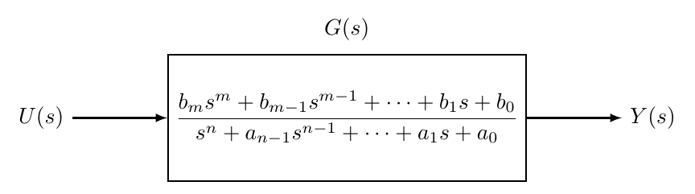
A transfer function is called proper tf when the degree of the denominator is greater than or equal to that of the numerator \((m\leq n)\). It is called strictly proper when the denominator degree is strictly larger \((m<n)\), in which case \[G(\infty)=\lim_{s\to\infty}G(s)=0.\] If the numerator and denominator have the same degree, then \(G(\infty)\neq 0\) in general and the transfer function can be separated into a constant high-frequency gain and a strictly proper remainder: \[G(s)=G(\infty)+G_{sp}(s).\]
Find the transfer function of the system represented by the differential equation \[\ddot{y} + 8\dot{y} + 15y \;=\; 3\ddot{u} + 10\dot{u} - 12u ,\] where \(\dot{u} = u^{(1)}\), \(\ddot{u} = u^{(2)}\), and so on. Determine if the transfer function is proper or strictly proper. If it is not strictly proper, find the strictly proper part.
The transfer function can be written by inspection as \[G(s) = \frac{3s^2 + 10s - 12}{s^2 + 8s + 15}.\]
The second-order transfer function \(G(s)\) is proper because the degrees of the numerator and denominator are the same. To check if it is strictly proper, we evaluate \[G(\infty) = \lim_{s\to\infty} G(s).\]
Since the leading coefficients are \(3\) (numerator) and \(1\) (denominator), we have \[G(\infty) = 3.\]
Thus, \(G(s)\) is proper but not strictly proper. We can write \[G(s) - G(\infty) = \frac{3s^2 + 10s - 12}{s^2 + 8s + 15} - 3.\]
Simplify the expression: \[G(s) - G(\infty) = \frac{3s^2 + 10s - 12 - 3(s^2 + 8s + 15)}{s^2 + 8s + 15},\] \[= \frac{3s^2 + 10s - 12 - (3s^2 + 24s + 45)}{s^2 + 8s + 15},\] \[= \frac{-14s - 57}{s^2 + 8s + 15}.\] Based on this, we define the strictly proper part as \[G_{sp}(s) = \frac{-14s - 57}{s^2 + 8s + 15}.\] Hence, \[G(s) = 3 + \frac{-14s - 57}{s^2 + 8s + 15}.\]
Poles and zeros. Once a transfer function has been written down, the next quantities to identify are its zeros and poles. The zeros are the values of \(s\) that make the numerator vanish. If the numerator factors as \[b_m (s-z_1)(s-z_2)\cdots (s-z_m),\] then \(z_1,z_2,\ldots,z_m\) are the zeros. The poles are the values of \(s\) that make the denominator vanish. If the denominator factors as \[(s-p_1)(s-p_2)\cdots (s-p_n),\] then \(p_1,p_2,\ldots,p_n\) are the poles.
This lets us rewrite the transfer function in the compact pole-zero form \[G(s) = K \cdot \frac{(s - z_1)(s - z_2)\cdots (s - z_m)} {(s - p_1)(s - p_2)\cdots (s - p_n)},\] where \(K\) is a constant gain factor (often \(b_m\)). Listing 1.3 shows how to define a transfer function using zero–pole–gain form in MATLAB.
import numpy as np
import control as ctrl
z = np.array([-2, -3]) # zeros
p = np.array([-1, -5, -10]) # poles
k = 4 # gain
# Create transfer function in ZPK form
sys = ctrl.zpk(z,p,k)
# Display system
print(sys) z = [-2 -3]; % zeros
p = [-1 -5 -10]; % poles
k = 4; % gain
% Create transfer function in ZPK form
sys = zpk(z,p,k);
% Display system
disp(sys)The poles of \(G(s)\) largely determine the stability and natural dynamic behaviour of the system. For example, if any pole lies in the right half of the complex plane, the system is unstable. The zeros influence how the input is shaped on its way to the output and therefore affect transient and frequency behaviour, but they do not by themselves determine stability. If the coefficients of the transfer function are real, then complex poles and zeros appear in conjugate pairs.
Poles shape the system’s natural dynamics, while zeros affect how the input is filtered through the system.
Given the transfer function \[G(s) = \frac{2(s+2)(s+3)}{(s+1)(s+4)(s+5)},\] find all poles and zeros, write \(G(s)\) in pole-zero form, and determine whether the system is stable.
We begin with the zeros, which are the values of \(s\) that make the numerator equal to zero: \[2(s+2)(s+3) = 0.\] Hence, \[s = -2, \qquad s = -3.\] Therefore, the system has two zeros located at \[z_1 = -2, \qquad z_2 = -3.\]
Next we find the poles by setting the denominator equal to zero: \[(s+1)(s+4)(s+5) = 0.\] Hence, \[s = -1, \qquad s = -4, \qquad s = -5.\] Thus, the system has three poles located at \[p_1 = -1, \qquad p_2 = -4, \qquad p_3 = -5.\]
The transfer function can therefore be written in pole-zero form as \[G(s) = 2\frac{(s+2)(s+3)}{(s+1)(s+4)(s+5)} = K\frac{(s-z_1)(s-z_2)}{(s-p_1)(s-p_2)(s-p_3)},\] where \[K=2, \quad z_1=-2,\quad z_2=-3,\quad p_1=-1,\quad p_2=-4,\quad p_3=-5.\]
Since all poles lie in the left half-plane \((-1,-4,-5)\), the system is stable. The poles at \(-4\) and \(-5\) correspond to faster decaying modes, while the pole at \(-1\) dominates the slower part of the response. The zeros at \(-2\) and \(-3\) influence how the input signal is filtered before it appears at the output. Figure 1.4 shows these pole and zero locations in the \(s\)-plane.
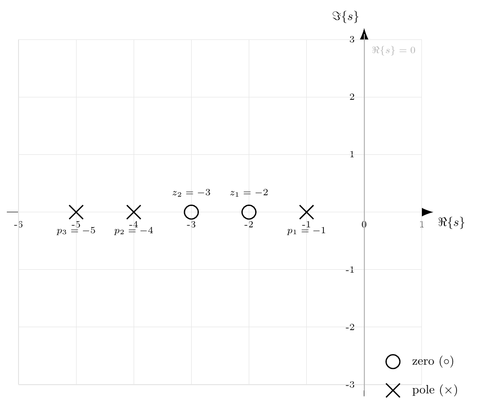
RLC circuit modelling starts from the constitutive equation of each component and applies Kirchhoff’s laws to the connections. Figure 1.5 shows the basic elements.
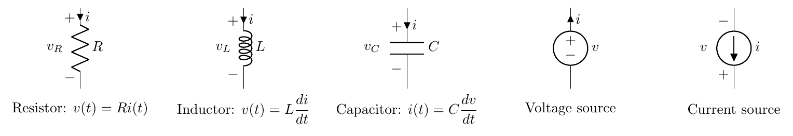
Each element has its own constitutive equation:
\[\begin{align*} v_R(t) &= R \, i(t), \\ v_L(t) &= L \, \frac{di(t)}{dt}, \\ i_C(t) &= C \, \frac{dv(t)}{dt}. \end{align*}\]
These equations are the building blocks of more complex circuits. Once the components are connected together, we use Kirchhoff’s laws to combine them into an overall model.
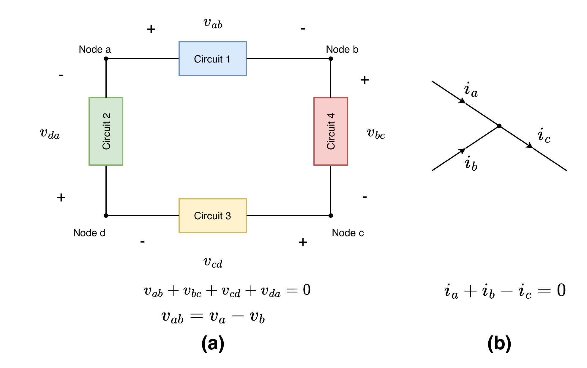
Kirchhoff’s laws. Figure 1.6 shows the two laws that organise circuit modelling. Kirchhoff’s Voltage Law (KVL) states that the algebraic sum of voltages around a closed loop is zero. Kirchhoff’s Current Law (KCL) states that the algebraic sum of currents at a node is zero, or simply that current flowing into a node must equal current flowing out.
The algebraic sum of voltages around any closed loop is zero: \[v_{ab} + v_{bc} + v_{cd} + v_{da} = 0\]
The algebraic sum of currents at any node is zero. In other words, the total current that goes into a node should leave the node: \[i_a + i_b - i_c = 0\]
Find the transfer function \(\tfrac{V(s)}{I(s)}\) for the parallel RLC circuit shown in Fig. 1.7. Assume \(v(t) = 0\) for \(t < 0\).
Applying Kirchhoff’s Current Law gives \[i(t) = i_R(t) + i_L(t) + i_C(t).\]
Substituting the component relations gives \[i(t) = \frac{v(t)}{R} + \frac{1}{L}\int_0^t v(\tau)\, d\tau + C\frac{dv(t)}{dt}.\]
Differentiating both sides with respect to \(t\): \[\frac{di(t)}{dt} = \frac{1}{R}\frac{dv(t)}{dt} + \frac{1}{L}v(t) + C\frac{d^2 v(t)}{dt^2}.\]
Dividing by \(C\): \[\frac{d^2 v(t)}{dt^2} + \frac{1}{CR}\frac{dv(t)}{dt} + \frac{1}{CL}v(t) = \frac{1}{C}\frac{di(t)}{dt}.\]
Taking the Laplace transform (zero initial conditions): \[\left(s^2 + \frac{1}{CR}s + \frac{1}{CL}\right)V(s) = \frac{s}{C} I(s).\]
Hence, the transfer function is \[G(s) = \frac{V(s)}{I(s)} = \frac{\tfrac{1}{C}s}{s^2 + \tfrac{1}{CR}s + \tfrac{1}{CL}}.\]
(0,0) to[american current source, l=\(i(t)\)] (0,3) (0,3) – (4.5,3) (0,0) – (4.5,0);
(1.5,3) to[R=\(R\), i_=\(i_R(t)\)] (1.5,0);
(3,3) to[L=\(L\), i_=\(i_L(t)\)] (3,0);
(4.5,3) to[C=\(C\), i_=\(i_C(t)\)] (4.5,0);
at (2.5,3.3) \(v(t)\);
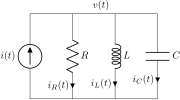
Find the transfer function \(I/V\) of the series RLC circuit in Figure 1.8. Assume that no current was flowing through the loop prior to \(t=0\).
The current through all components is the same, so Kirchhoff’s Voltage Law gives \[\begin{align*} v(t) &= v_R(t) + v_L(t) + v_C(t) \\ &= Ri(t) + L\frac{di(t)}{dt} + \frac{1}{C}\int_0^t i(\tau)\, d\tau + v_C(0). \end{align*}\]
Differentiating both sides with respect to time and dividing by \(L\), we obtain \[\frac{d^2 i(t)}{dt^2} + \frac{R}{L}\frac{di(t)}{dt} + \frac{1}{CL}i(t) = \frac{1}{L}\frac{dv(t)}{dt}.\]
Taking the Laplace transform under zero initial conditions, \[\left( s^2 + \frac{R}{L}s + \frac{1}{CL} \right) I(s) = \frac{s}{L} V(s).\]
Thus, the transfer function is \[G(s) = \frac{I(s)}{V(s)} = \frac{\tfrac{1}{L}s}{s^2 + \tfrac{R}{L}s + \tfrac{1}{CL}}.\]
(0,0) to[sinusoidal voltage source, l=\(v(t)\)] (0,3) – (1.5,3);
(1.5,3) to[R, l_=\(R\), i>_=\(i(t)\), v^<=\(v_R(t)\)] (3.5,3);
(3.5,3) to[L, l_=\(L\), v^<=\(v_L(t)\)] (5.5,3);
(5.5,3) to[C, l_=\(C\), v^<=\(v_C(t)\)] (5.5,0) – (0,0);
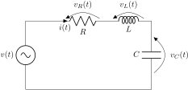
A quicker alternative to writing differential equations is to replace each element by its impedance in the Laplace domain and analyse the circuit using series and parallel rules.
Impedance. For an electric circuit with input voltage \(V(s)\) and input current \(I(s)\), the impedance is defined as \[Z(s) = \frac{V(s)}{I(s)} .\]
For the basic components, the impedances in the \(s\)–domain are \[\begin{align} Z_R(s) &= R, && \text{for a resistor}, \\ Z_L(s) &= sL, && \text{for an inductor}, \\ Z_C(s) &= \frac{1}{sC}, && \text{for a capacitor}. \end{align}\]
Series and parallel combinations. Once each element has been replaced by its impedance, ordinary circuit-combination rules apply. In series, impedances add directly: \[Z = Z_1 + Z_2 + \cdots\] In parallel, admittances add: \[\frac{1}{Z} = \frac{1}{Z_1} + \frac{1}{Z_2} + \cdots\] Figure 1.9 shows these two basic combinations.
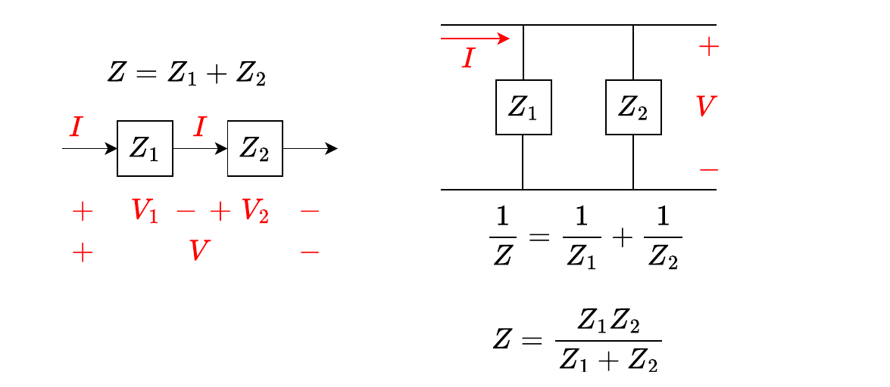
Once an equivalent impedance is obtained, the transfer function follows from a voltage-divider or current-divider argument.
This method avoids solving differential equations directly. Once the equivalent impedance \(Z(s)\) is found, the transfer function follows immediately as \[G(s) = \frac{V(s)}{I(s)} \quad \text{or} \quad G(s) = \frac{I(s)}{V(s)} ,\] depending on the desired input-output relationship.
Consider the two series networks in Fig. 1.10. Find the transfer function \(G(s)=\dfrac{V_o(s)}{V_i(s)}\) where \(V_o\) is measured across the lower element (\(C_2\) in (a), \(L_2\) in (b)).
(a) Capacitive divider. The impedances are \(Z_{C_1}=\dfrac{1}{sC_1}\) and \(Z_{C_2}=\dfrac{1}{sC_2}\). By the voltage divider rule, \[G(s)=\frac{V_o(s)}{V_i(s)}=\frac{Z_{C_2}}{Z_{C_1}+Z_{C_2}} =\frac{\dfrac{1}{sC_2}}{\dfrac{1}{sC_1}+\dfrac{1}{sC_2}} =\frac{C_1}{C_1+C_2}.\] Thus the gain is constant (independent of \(s\)): \(G(s)=\dfrac{C_1}{C_1+C_2}\).
(b) Inductive divider. The impedances are \(Z_{L_1}=sL_1\) and \(Z_{L_2}=sL_2\). Again using the divider rule, \[G(s)=\frac{V_o(s)}{V_i(s)}=\frac{Z_{L_2}}{Z_{L_1}+Z_{L_2}} =\frac{sL_2}{s(L_1+L_2)} =\frac{L_2}{L_1+L_2}.\] This gain is also constant: \(G(s)=\dfrac{L_2}{L_1+L_2}\).
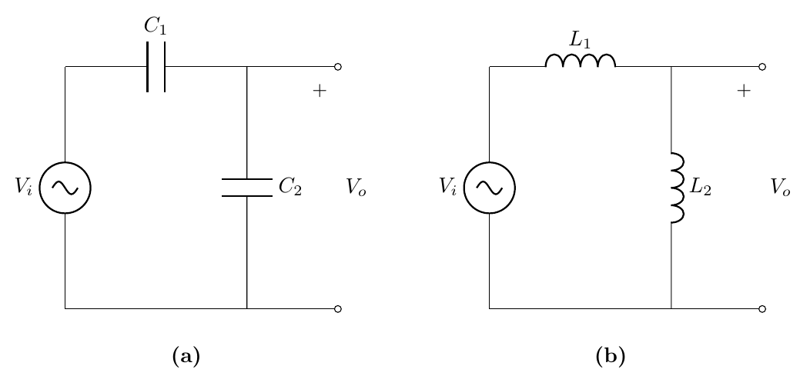
Consider the circuits shown in Fig. 1.11. We wish to derive the transfer function \[G(s) \;=\; \frac{V_o(s)}{V_i(s)}.\]
Using impedance equivalents, we identify \[Z_1(s) \;=\; R_1 \; \Big\| \; \frac{1}{sC_1}, \qquad Z_2(s) \;=\; R_2.\]
Thus the transfer function is a simple voltage divider: \[\frac{V_o(s)}{V_i(s)} \;=\; \frac{Z_2(s)}{Z_1(s) + Z_2(s)}.\]
Substituting the impedances: \[G(s) = \frac{R_2}{\left( \dfrac{R_1}{1+sR_1C_1} \right) + R_2}.\]
(0,0) to[sV, l=\(V_i\)] (0,-3) node[ground] (0,0) to[R=\(R_1\)] (3,0) (3,0) to[R=\(R_2\)] (3,-3) node[ground] (0.5,1.5) to[C=\(C_1\)] (2.5,1.5) (0.5,1.5) |- (0,0) (2.5,1.5) |- (3,0) (3,0) node[circ] node[above,red]\(V_o\);
(6,0) to[sV, l=\(V_i\)] (6,-3) node[ground] (6,0) to[generic, l=\(Z_1(s)\)] (9,0) (9,0) to[generic, l=\(Z_2(s)\)] (9,-3) node[ground] (9,0) node[circ] node[above,red]\(V_o\);
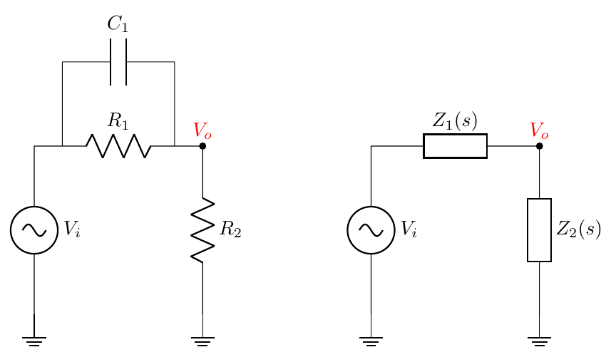
Consider the circuit given in Fig 1.12. Considering the impedance equivalent of each component, derive the equations describing the system dynamics and obtain the transfer function from the input voltage source \(V_i\) to the output voltage \(V_o\).
Consider the circuit in Figure 1.12. Using mesh currents \(I_1,I_2,I_3,I_4\) and the impedances \(Z_{L_k}=sL_k\), \(Z_{C_k}=1/(sC_k)\), the KVL equations are \[\begin{aligned} & sL_1 I_1 + \frac{1}{sC_1}(I_1-I_2) = V_i,\\ & \frac{1}{sC_1}(I_2-I_1) + R_1(I_2-I_3) = 0,\\ & sL_2 I_3 + \frac{1}{sC_2}(I_3-I_4) + R_1(I_3-I_2) = 0,\\ & R_2 I_4 + \frac{1}{sC_2}(I_4-I_3) = 0 . \end{aligned}\] In matrix (mesh impedance) form, \[\underbrace{\begin{bmatrix} Z_{L_1}+Z_{C_1} & -Z_{C_1} & 0 & 0\\[2pt] -Z_{C_1} & Z_{C_1}+R_1 & -R_1 & 0\\[2pt] 0 & -R_1 & Z_{L_2}+R_1+Z_{C_2} & -Z_{C_2}\\[2pt] 0 & 0 & -Z_{C_2} & Z_{C_2}+R_2 \end{bmatrix}}_{\displaystyle Z(s)} \underbrace{\begin{bmatrix} I_1\\ I_2\\ I_3\\ I_4 \end{bmatrix}}_{I(s)} = \underbrace{\begin{bmatrix} V_i\\ 0\\ 0\\ 0 \end{bmatrix}}_{V(s)}.\] The currents can then be obtained with standard linear algebra techniques (e.g. \(I(s)=Z(s)^{-1}{V(s)}\) ) or with the Matlab Symbolic Toolbox as shown in code Listing [lst:transfer_function_symbolic]. The output is \(V_o(s)=R_2 I_4(s)\), hence \(G(s)=V_o(s)/V_i(s)=R_2\,I_4(s)/V_i(s)\).
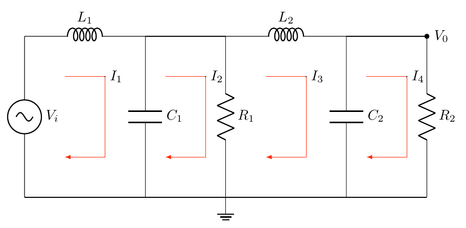
from sympy import symbols, Matrix, simplify, pprint, Rational
s, Vi = symbols('s Vi')
L1 = Rational(1, 10) # 100e-3
L2 = Rational(1, 10) # 100e-3
C1 = Rational(1, 100) # 10e-3
C2 = Rational(1, 100) # 10e-3
R1 = 100
R2 = 100
ZL1 = s*L1
ZL2 = s*L2
ZC1 = 1/(s*C1)
ZC2 = 1/(s*C2)
Z = Matrix([
[ZL1+ZC1, -ZC1, 0, 0 ],
[-ZC1, ZC1+R1, -R1, 0 ],
[0, -R1, ZL2+R1+ZC2, -ZC2 ],
[0, 0, -ZC2, ZC2+R2 ]
])
V = Matrix([Vi, 0, 0, 0])
I = Z.solve(V)
G = simplify(R2 * I[3] / Vi)
print("G(s) = V_o(s)/V_i(s) =")
pprint(G)syms s Vi
L1=100e-3; L2=100e-3; C1=10e-3; C2=10e-3; R1=100; R2=100;
ZL1=s*L1; ZL2=s*L2;
ZC1=1/(s*C1); ZC2=1/(s*C2);
Z=[ ZL1+ZC1, -ZC1, 0, 0;
-ZC1, ZC1+R1, -R1, 0;
0, -R1, ZL2+R1+ZC2, -ZC2;
0, 0, -ZC2, ZC2+R2 ];
I = Z\[Vi;0;0;0];
G = simplify(R2*I(4)/Vi)
An operational amplifier (op-amp) has two input terminals: the inverting input \(V_{-}\) and the non-inverting input \(V_{+}\). Figure 1.14 shows a commercial op-amp (LM741) and its pin configuration.
The output voltage \(V_{o}\) is given by \[V_{o} = K \, (V_{+} - V_{-}),\] where \(K\) is the open-loop gain of the amplifier.
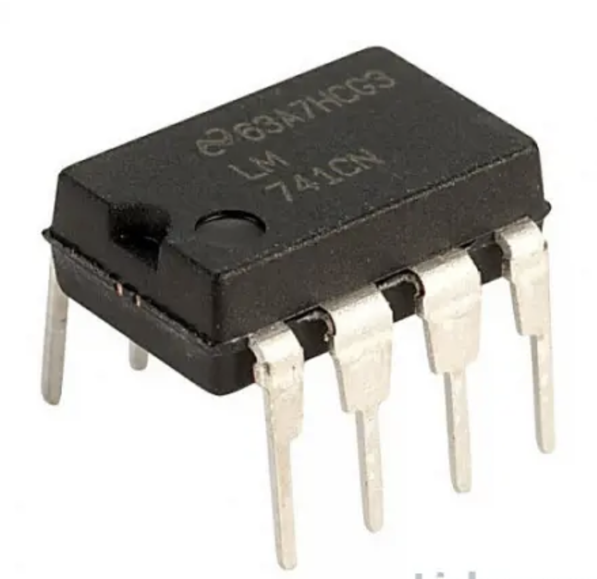
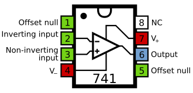
Ideal op-amp assumptions. We assume infinite gain \((K\to\infty)\), infinite input impedance (zero input currents), and zero output impedance. With feedback, these assumptions imply \[V_{+} = V_{-}, \qquad i_{+} = i_{-} = 0.\]
(opamp) ; at (opamp.+) \(V_{+}\); at (opamp.-) \(V_{-}\); at (opamp.out) \(V_{o}\);
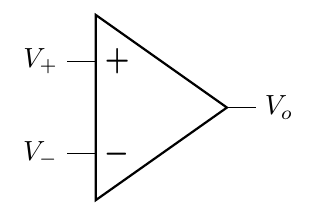
Find the transfer function \(V_{o}/V_{i}\) of the circuits shown in Fig. 1.17.
Solution:
Case (a): Non-inverting configuration. Here, \(V_{i}(s)=V_{+}(s)=V_{-}(s)\). The input current into the op-amp is zero. By applying KCL at the inverting input:
\[\frac{V_{i}}{Z_{1}} = \frac{V_{o}-V_{i}}{Z_{2}} \quad \Rightarrow \quad \left( \frac{1}{Z_{1}} + \frac{1}{Z_{2}} \right) V_{i} = \frac{V_{o}}{Z_{2}}\]
\[\Rightarrow \quad \frac{V_{o}}{V_{i}} = \frac{Z_{1}+Z_{2}}{Z_{1}}. \tag{2.19a}\]
Case (b): Inverting configuration. Here, \(V_{-}=V_{+}=0\) (virtual ground). By KCL:
\[\frac{V_{i}}{Z_{1}} = -\frac{V_{o}}{Z_{2}} \quad \Rightarrow \quad \frac{V_{o}}{V_{i}} = -\frac{Z_{2}}{Z_{1}}. \tag{2.19b}\]
Thus, the non-inverting case provides a positive gain greater than unity, while the inverting case provides a negative gain determined by the impedance ratio.
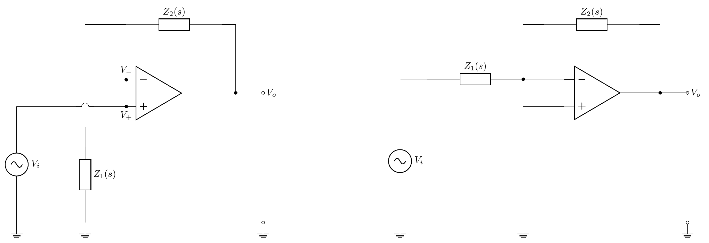
Find the overall transfer function \(G(s)=V_o(s)/V_i(s)\) of the two-stage network shown in Figure 1.18. Assume zero initial conditions.
Solution. We split the analysis into two parts.
1. First stage: \(V_1/V_i\)
The first op-amp is the configuration of Example 2-7(b) with \[Z_{1}(s) \;=\; \frac{1}{C_1 s}\,\Big\|\,R_1 \;=\;\frac{R_1}{C_1 R_1 s +1},\] \[Z_{2}(s) \;=\;\frac{1}{C_2 s}\,\Big\|\,R_2 \;=\;\frac{R_2}{C_2 R_2 s +1}.\] For an inverting op-amp, \[\frac{V_1}{V_i} \;=\;-\,\frac{Z_{2}(s)}{Z_{1}(s)} \;=\;-\,\frac{\displaystyle \frac{R_2}{C_2 R_2 s +1}} {\displaystyle \frac{R_1}{C_1 R_1 s +1}} \;=\;-\,\frac{R_2}{R_1}\; \frac{C_1 R_1 s +1}{C_2 R_2 s +1}.\] 2. Second stage: \(V_o/V_1\)
Similarly, the second op-amp (also an inverting configuration) has \[Z_{1}'(s)=\frac{R_3}{C_3 R_3 s +1}, \qquad Z_{2}'(s)=\frac{R_4}{C_4 R_4 s +1},\] and \[\frac{V_o}{V_1} \;=\;-\,\frac{Z_{2}'(s)}{Z_{1}'(s)} \;=\;-\,\frac{R_4}{R_3}\; \frac{\,C_3 R_3 s +1\,}{\,C_4 R_4 s +1\,}.\]
3. Overall transfer: \(V_o/V_i\)
The two stages cascade, so \[G(s) =\frac{V_o}{V_i} =\frac{V_o}{V_1}\,\frac{V_1}{V_i} =\Bigl(-\,\dfrac{R_4}{R_3}\,\dfrac{C_3 R_3 s +1}{C_4 R_4 s +1}\Bigr) \;\times\; \Bigl(-\,\dfrac{R_2}{R_1}\,\dfrac{C_1 R_1 s +1}{C_2 R_2 s +1}\Bigr).\] which simplifies to \[G(s) = \frac{V_o(s)}{V_i(s)} = \frac{R_2\,R_4}{R_1\,R_3}\; \underbrace{\frac{C_1 R_1 s +1}{C_2 R_2 s +1}}_{\text{stage 1}} \;\times\; \underbrace{\frac{C_3 R_3 s +1}{C_4 R_4 s +1}}_{\text{stage 2}}.\]
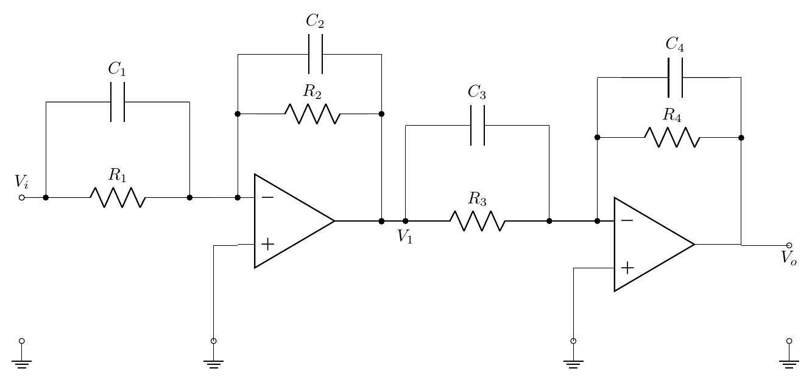
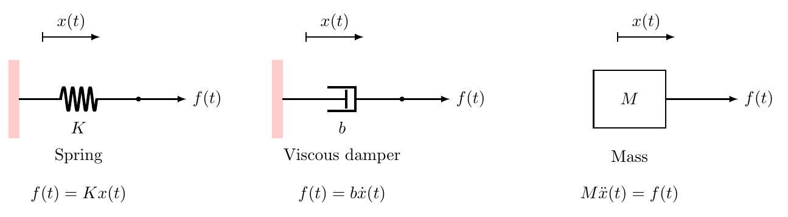
Translational motion is modelled with three basic elements: springs (react to displacement), dampers (react to velocity), and masses (react to acceleration). Figure 1.19 shows these elements and their constitutive relations.
Spring. A linear spring stores potential energy and exerts a restoring force proportional to the displacement \(x(t)\) from its equilibrium position. Its constitutive relation is \[f(t)\;=\;K\,x(t), \qquad \underbrace{[\,\text{N}\,]}_{f}\;=\;\underbrace{[\,\tfrac{\text{N}}{\text{m}}\,]}_{K}\;\times\;\underbrace{[\,\text{m}\,]}_{x}\,.\]
Viscous damper. A viscous damper dissipates kinetic energy and produces a force proportional to relative velocity: \[f(t)\;=\;b\,\dot x(t), \qquad \underbrace{[\,\text{N}\,]}_{f}\;=\;\underbrace{[\,\tfrac{\text{N}\cdot\text{s}}{\text{m}}\,]}_{b}\;\times\;\underbrace{[\,\tfrac{\text{m}}{\text{s}}\,]}_{\dot x}\,.\]
Mass. A rigid mass resists acceleration according to Newton’s second law: \[M\,\ddot x(t)\;=\;f(t), \qquad \underbrace{[\,\text{kg}\,]}_{M}\;\times\;\underbrace{[\,\tfrac{\text{m}}{\text{s}^2}\,]}_{\ddot x}\;=\;\underbrace{[\,\text{N}\,]}_{f}.\] Here \(\dot x(t)\) denotes velocity and \(b\) is the damping coefficient, measured as force per unit velocity.
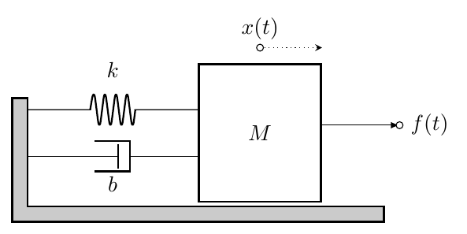
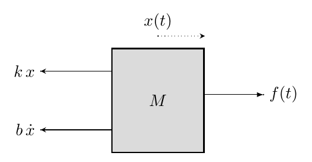
Derive the equation of motion for the system shown in Figure 1.20. Assume that the system is initially at rest, so \(x(0)=\dot x(0)=0\).
We begin the modelling process by identifying all forces acting on the mass \(M\) and applying Newton’s second law of motion: \[\sum F = M\ddot{x},\] where \(\sum F\) denotes the net force acting on \(M\).
Consider Figure 1.20. Since there is only one moving body, the analysis focuses on mass \(M\) and the forces applied to it. We choose the positive direction of motion to the right, with the external force \(f(t)\) also acting in this direction.
The spring and damper, whose other ends are fixed to a rigid wall, oppose this motion. The spring exerts a restoring force proportional to displacement, \(k x(t)\), and the damper exerts a resistive force proportional to velocity, \(b\dot{x}(t)\). Both of these forces act to the left, opposing the applied force. These forces are illustrated in Figure 1.21.
Thus, the equation of motion (EOM) is: \[\begin{equation} M\ddot{x}(t) = f(t) - kx(t) - b\dot{x}(t). \end{equation}\]
Taking the Laplace transform of both sides, and assuming zero initial displacement and velocity, we obtain: \[\begin{equation*} (Ms^2 + bs + k)X(s) = F(s). \end{equation*}\]
Therefore, the transfer function from the input force \(f(t)\) to the displacement \(x(t)\) is: \[\begin{equation*} G(s) = \frac{X(s)}{F(s)} = \frac{1}{Ms^2 + bs + k}. \end{equation*}\]
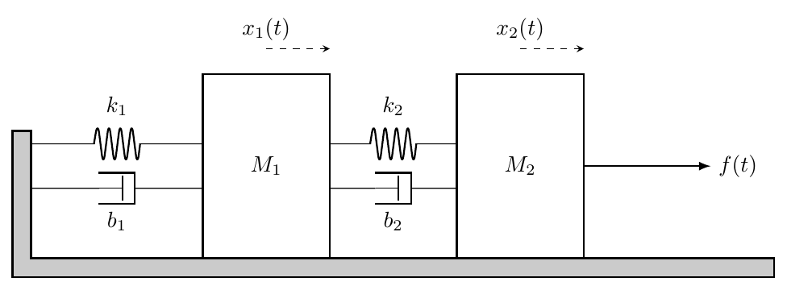
Derive the equations of motion for the two-mass system shown in Figure 1.22. Assume that the system is initially at rest, so \(x_1(0)=\dot x_1(0)=x_2(0)=\dot x_2(0)=0\).
We apply Newton’s second law to each mass: \[\sum F = M\ddot{x}.\]
For mass \(M_1\), the wall spring and wall damper contribute the restoring and dissipative forces \(-k_1x_1\) and \(-b_1\dot{x}_1\). The coupling spring and damper contribute forces based on relative displacement and relative velocity, namely \(-k_2(x_1-x_2)\) and \(-b_2(\dot{x}_1-\dot{x}_2)\). Therefore \[\begin{equation*} M_1\ddot{x}_1 = -k_1x_1 - b_1\dot{x}_1 - k_2(x_1 - x_2) - b_2(\dot{x}_1 - \dot{x}_2). \end{equation*}\]
For mass \(M_2\), the external force \(f(t)\) acts to the right, while the coupling spring and damper oppose the relative motion. Hence \[\begin{equation*} M_2\ddot{x}_2 = f(t) - k_2(x_2 - x_1) - b_2(\dot{x}_2 - \dot{x}_1). \end{equation*}\]
These equations can be written compactly in matrix form as \[\begin{bmatrix} M_1 & 0 \\ 0 & M_2 \end{bmatrix} \begin{bmatrix} \ddot{x}_1 \\ \ddot{x}_2 \end{bmatrix} + \begin{bmatrix} b_1+b_2 & -b_2 \\ -b_2 & b_2 \end{bmatrix} \begin{bmatrix} \dot{x}_1 \\ \dot{x}_2 \end{bmatrix} + \begin{bmatrix} k_1+k_2 & -k_2 \\ -k_2 & k_2 \end{bmatrix} \begin{bmatrix} x_1 \\ x_2 \end{bmatrix} = \begin{bmatrix} 0 \\ f(t) \end{bmatrix}.\]
Assuming zero initial conditions and taking the Laplace transform gives \[A(s)\begin{bmatrix}X_1(s) \\ X_2(s)\end{bmatrix} = \begin{bmatrix}0 \\ F(s)\end{bmatrix},\] where \[A(s) = \begin{bmatrix} M_1 s^2 + (b_1+b_2)s + (k_1+k_2) & -(b_2 s + k_2) \\ -(b_2 s + k_2) & M_2 s^2 + b_2 s + k_2 \end{bmatrix}.\]
Solving this \(2\times2\) system by matrix inversion gives \[\begin{bmatrix} X_1(s) \\ X_2(s) \end{bmatrix} = \frac{1}{\Delta(s)} \begin{bmatrix} M_2 s^2 + b_2 s + k_2 & b_2 s + k_2 \\ b_2 s + k_2 & M_1 s^2 + (b_1+b_2)s + (k_1+k_2) \end{bmatrix} \begin{bmatrix} 0 \\ F(s) \end{bmatrix},\] with \[\Delta(s) = \bigl[M_1 s^2 + (b_1+b_2)s + (k_1+k_2)\bigr] \bigl[M_2 s^2 + b_2 s + k_2\bigr] - (b_2 s + k_2)^2.\]
Therefore, \[X_1(s) = \dfrac{(b_2 s + k_2)F(s)}{\Delta(s)}, \quad X_2(s) = \dfrac{\big[M_1 s^2 + (b_1+b_2)s + (k_1+k_2)\big]F(s)}{\Delta(s)}.\] Hence, the transfer function from the applied force to the displacement of \(M_2\) is \[\frac{X_2(s)}{F(s)} = \dfrac{M_1 s^2 + (b_1+b_2)s + (k_1+k_2)}{\Delta(s)}.\]
Listing [lst:matlab-verification] confirms the symbolic expressions for \(X_1(s)\), \(X_2(s)\), and the transfer function \(X_2(s)/F(s)\) using MATLAB.
Python verification of \(X_1(s)\), \(X_2(s)\), and transfer function \(X_2(s)/F(s)\).
from sympy import symbols, Matrix, simplify, pprint
M1, M2, b1, b2, k1, k2, s, Fs = symbols('M1 M2 b1 b2 k1 k2 s Fs')
A_s = Matrix([
[M1*s**2 + (b1+b2)*s + (k1+k2), -(b2*s + k2)],
[-(b2*s + k2), M2*s**2 + b2*s + k2]
])
F_s = Matrix([0, Fs])
X_s = A_s.solve(F_s)
X1_s = simplify(X_s[0])
X2_s = simplify(X_s[1])
print('X1(s):')
pprint(X1_s)
print('\nX2(s):')
pprint(X2_s)
G2_s = simplify(X2_s / Fs)
print('\nX2(s)/F(s):')
pprint(G2_s)clear; clc;
syms M1 M2 b1 b2 k1 k2 s Fs
A_s = [M1*s^2+(b1+b2)*s+(k1+k2), -(b2*s+k2);
-(b2*s+k2), M2*s^2+b2*s+k2];
F_s = [0; Fs];
X_s = A_s \ F_s;
X1_s = simplify(X_s(1));
X2_s = simplify(X_s(2));
disp('X1(s):'); pretty(X1_s)
disp('X2(s):'); pretty(X2_s)
G2_s = simplify(X2_s/Fs);
disp('X2(s)/F(s):'); pretty(G2_s)Derive the equations of motion for the quarter-car suspension system shown in Figure 1.23. The model consists of a sprung mass \(M_s\) representing the vehicle body and an unsprung mass \(M_{us}\) representing the wheel assembly. The suspension is modelled by a spring \(k_s\) and a damper \(c_s\), while the tire is modelled as a spring \(k_t\). The road disturbance is \(y_r(t)\). Assume initial rest conditions.
We apply Newton’s second law to each mass. Let \(y_s(t)\) denote the vertical displacement of the sprung mass and \(y_{us}(t)\) the displacement of the unsprung mass. The positive direction is upward.
For the sprung mass, the only forces come from the suspension spring and damper, both of which depend on the relative motion between the body and the wheel. Therefore \[\begin{equation} M_s \ddot{y}_s = -k_s(y_s-y_{us}) - c_s(\dot{y}_s-\dot{y}_{us}). \end{equation}\]
For the unsprung mass, the suspension spring and damper act in the opposite direction, and the tire spring contributes an additional force based on the relative displacement between the wheel and the road. Hence \[\begin{equation} M_{us} \ddot{y}_{us} = -k_s(y_{us}-y_s) - c_s(\dot{y}_{us}-\dot{y}_{s}) - k_t(y_{us}-y_r). \end{equation}\]
The system can be written compactly as
\[\underbrace{\begin{bmatrix} M_s & 0 \\ 0 & M_{us} \end{bmatrix}}_{M} \begin{bmatrix} \ddot{y}_s \\ \ddot{y}_{us} \end{bmatrix} + \underbrace{\begin{bmatrix} c_s & -c_s \\ -c_s & c_s \end{bmatrix}}_{C} \begin{bmatrix} \dot{y}_s \\ \dot{y}_{us} \end{bmatrix} + \underbrace{\begin{bmatrix} k_s & -k_s \\ -k_s & k_s+k_t \end{bmatrix}}_{K} \begin{bmatrix} y_s \\ y_{us} \end{bmatrix} = \begin{bmatrix} 0 \\ k_t y_r \end{bmatrix}.\]
Assuming zero initial conditions and taking the Laplace transform gives \[\Big(Ms^2 + Cs + K\Big) \begin{bmatrix} Y_s(s) \\ Y_{us}(s) \end{bmatrix} = \begin{bmatrix} 0 \\ k_t Y_r(s) \end{bmatrix}.\]
Let \[A(s) = Ms^2 + Cs + K,\] then \[A(s)\begin{bmatrix}Y_s(s) \\ Y_{us}(s)\end{bmatrix} = \begin{bmatrix}0 \\ k_t Y_r(s)\end{bmatrix}.\]
The solution is obtained by inverting \(A(s)\): \[\begin{bmatrix} Y_s(s) \\ Y_{us}(s) \end{bmatrix} = A(s)^{-1} \begin{bmatrix} 0 \\ k_t Y_r(s) \end{bmatrix}.\]
This system can be solved analytically by matrix inversion or numerically in MATLAB. For ride-comfort analysis, the transfer function from the road displacement \(Y_r(s)\) to the body displacement \(Y_s(s)\) is usually the quantity of greatest interest.
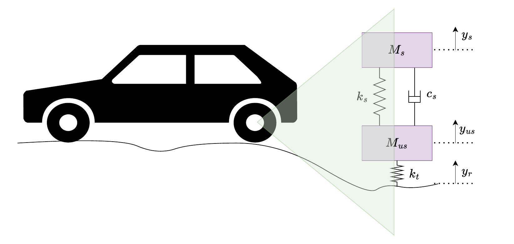
Rotational systems are modelled the same way as translational ones, with mass replaced by moment of inertia \(J\), displacement by angle \(\theta\), velocity by \(\dot{\theta}\), and force by torque \(T\). A torsional spring obeys \(T=k\,\theta\), a rotational damper obeys \(T=b\,\dot{\theta}\), and Newton’s second law for rotation gives \(T=J\,\ddot{\theta}\).
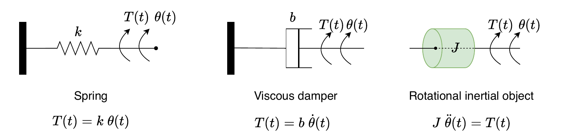
| Translational | Rotational | Analogy |
|---|---|---|
| Displacement \(x\) [m] | Angular displacement \(\theta\) [rad] | Position |
| Velocity \(\dot{x}=v\) [m/s] | Angular velocity \(\dot{\theta}=\omega\) [rad/s] | Velocity |
| Acceleration \(\ddot{x}=a\) [m/s\(^2\)] | Angular acceleration \(\ddot{\theta}=\alpha\) [rad/s\(^2\)] | Acceleration |
| Mass \(m\) [kg] | Moment of inertia \(J\) [kg m\(^2\)] | Resistance to acceleration |
| Force \(F\) [N] | Torque \(T\) [N m] | Cause of motion |
| Spring: \(F = k\;x\), \(k\) [N/m] | Spring: \(T = k\;\theta\), \(k\) [N m/rad] | Restoring element |
| Damper: \(F = b\;\dot{x}\), \(b\) [N s/m] | Damper: \(T = b\;\dot{\theta}\), \(b\) [N m s/rad] | Energy dissipation |
| Inertia: \(F = m\;\ddot{x}\), \(m\) [kg] | Inertia: \(T = J\;\ddot{\theta}\), \(J\) [kg m\(^2\)] | Newton’s law |
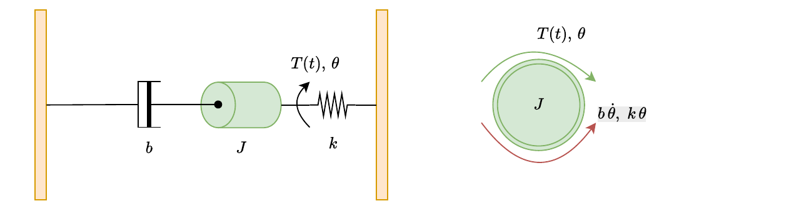
Consider the system shown in Figure 1.26. The applied torque \(T(t)\) causes the inertial body \(J\) to rotate in the clockwise direction, producing an angular displacement \(\theta(t)\). However, the viscous damper (with damping constant \(b\)) and the torsional spring (with stiffness \(k\)) oppose this motion. The damper exerts a resisting torque of magnitude \(b\,\dot{\theta}(t)\), while the spring produces a restoring torque of \(k\,\theta(t)\), both acting in the opposite direction to \(T(t)\).
Applying Newton’s second law for rotation gives: \[\begin{equation*} J\,\ddot{\theta}(t) = T(t) - b\,\dot{\theta}(t) - k\,\theta(t). \end{equation*}\]
Taking the Laplace transform of both sides (assuming zero initial conditions) yields: \[\begin{equation*} J\,s^2 \Theta(s) = T(s) - b\,s\,\Theta(s) - k\,\Theta(s). \end{equation*}\]
Rearranging terms: \[\begin{equation*} \left(J\,s^2 + b\,s + k \right)\Theta(s) = T(s). \end{equation*}\]
Thus, the transfer function from the input torque \(T(s)\) to the angular displacement \(\Theta(s)\) is: \[\begin{equation*} \frac{\Theta(s)}{T(s)} = \frac{1}{J\,s^2 + b\,s + k}. \end{equation*}\]
Consider the torsional system shown in Figure 1.27. In part (a), a torque \(T(t)\) is applied to the left end of a shaft mounted on bearings at both ends. Because the shaft is elastic, it cannot be treated as a perfectly rigid body. Instead, it twists under the applied torque, so that the angular displacement at the input end differs from that at the output end. To capture this effect, the shaft is modeled in part (b) as two rotating inertias, \(J_1\) and \(J_2\), connected by a torsional spring of stiffness \(K\). This spring accounts for the elastic twist of the shaft. The friction in the bearings is represented by viscous dampers \(b_1\) and \(b_2\), attached respectively to the two inertias, to model the energy dissipation due to bearing resistance.
Determine the transfer function between the input torque and the angular displacement of the second inertia, i.e., \[\frac{\Theta_2(s)}{T(s)}.\]
We write one rotational balance for \(J_1\) and one for \(J_2\). If \(J_2\) is viewed temporarily as fixed at position \(\theta_2\), then a positive twist of \(J_1\) by \(\theta_1\) produces a spring torque \[k\bigl(\theta_1(t)-\theta_2(t)\bigr).\] The damper \(b_1\) contributes an opposing torque proportional to angular velocity: \[b_1\dot{\theta}_1(t).\] The dynamic equation for \(J_1\) is therefore \[\begin{equation*} J_1\,\ddot{\theta}_1(t) = T(t) - b_1\dot{\theta}_1(t) - k\bigl(\theta_1(t)-\theta_2(t)\bigr). \end{equation*}\]
Now focus on \(J_2\). When \(J_2\) turns relative to \(J_1\), the spring resists with a torque \[k\bigl(\theta_2(t)-\theta_1(t)\bigr),\] and the damper \(b_2\) adds the torque \[b_2\dot{\theta}_2(t).\] Since no external torque is applied directly to \(J_2\), its equation of motion is \[\begin{equation*} J_2\,\ddot{\theta}_2(t) = -k\bigl(\theta_2(t)-\theta_1(t)\bigr) - b_2\dot{\theta}_2(t). \end{equation*}\] Taking the Laplace transform of both equations and assuming zero initial conditions gives \[\begin{align} J_1 \,s^2\, \Theta_1(s) &= T(s) - b_1 s \Theta_1(s) - k\bigl(\Theta_1(s)-\Theta_2(s)\bigr), \label{eq:J1laplace} \\ J_2 \,s^2 \,\Theta_2(s) &= -k\bigl(\Theta_2(s)-\Theta_1(s)\bigr) - b_2 s \Theta_2(s). \label{eq:J2laplace} \end{align}\] Rearranging [eq:J1laplace] gives: \[\begin{equation*} \bigl(J_1 s^2 + b_1 s + k \bigr)\Theta_1(s) - k\Theta_2(s) = T(s). \end{equation*}\] On the other hand, rearranging [eq:J2laplace] gives: \[\begin{equation*} -k\Theta_1(s) + \bigl(J_2 s^2 + b_2 s + k\bigr)\Theta_2(s) = 0. \end{equation*}\]
Writing the equations in matrix form: \[\begin{bmatrix} J_1 s^2 + b_1 s + k & -k \\ -k & J_2 s^2 + b_2 s + k \end{bmatrix} \begin{bmatrix} \Theta_1(s) \\ \Theta_2(s) \end{bmatrix} = \begin{bmatrix} T(s) \\ 0 \end{bmatrix}.\] Inverting this system yields \[\frac{\Theta_2(s)}{T(s)} = \frac{k}{(J_1 s^2 + b_1 s + k)(J_2 s^2 + b_2 s + k) - k^2}\]
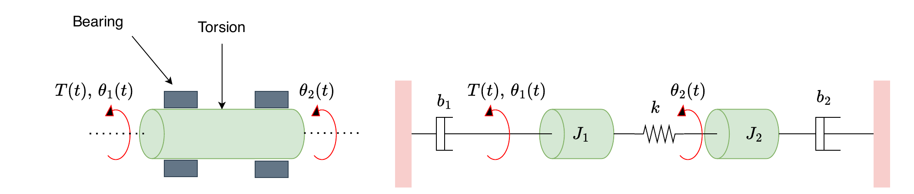
Find the transfer function \(\dfrac{\Theta_3(s)}{T(s)}\) for the rotational system shown in Figure 1.28.
Following the same procedure as in the previous examples, we write one equation of motion for each inertia \(J_i\), \(i=1,\ldots,3\): \[\begin{align*} J_1\ddot \theta_1 &=T-k_1(\theta_1-\theta_2)-b_1\dot \theta_1 \\ J_2\ddot \theta_2 &=-k_1(\theta_2-\theta_1)-k_2(\theta_2-\theta_3)-b_3(\dot \theta_2-\dot \theta_3)-b_2\dot \theta_2 \\ J_3\ddot \theta_3 &=-k_2(\theta_3-\theta_2)-b_3(\dot \theta_3-\dot \theta_2)-b_4\dot \theta_3 \end{align*}\]
Taking Laplace transforms (zero initial conditions assumed): \[\begin{align*} (J_1s^2+b_1s+k_1)\Theta_1 -k_1\Theta_2 &= T(s) \\ -k_1\Theta_1+(J_2s^2+(b_2+b_3)s+(k_1+k_2))\Theta_2 -(k_2+b_3s)\Theta_3 &=0 \\ -(k_2+b_3s)\Theta_2+(J_3s^2+(b_3+b_4)s+k_2)\Theta_3 &=0 \end{align*}\]
These equations can then be written in matrix form as \[\underbrace{\begin{bmatrix} J_1s^2+b_1s+k_1 & -k_1 & 0 \\ -k_1 & J_2s^2+(b_2+b_3)s+(k_1+k_2) & -(k_2+b_3s) \\ 0 & -(k_2+b_3s) & J_3s^2+(b_3+b_4)s+k_2 \end{bmatrix}}_{\triangleq A(s)} \begin{bmatrix} \Theta_1 \\ \Theta_2 \\ \Theta_3 \end{bmatrix} = \begin{bmatrix} T(s) \\ 0 \\ 0 \end{bmatrix}.\]
Letting \(\boldsymbol{\Theta}(s)=[\Theta_1,\Theta_2,\Theta_3]^\top\), we compactly have \[A(s)\,\boldsymbol{\Theta}(s)=\begin{bmatrix}T(s)\\0\\0\end{bmatrix}.\]
Solving for \(\boldsymbol{\Theta}(s)\) gives \[\boldsymbol{\Theta}(s)=A(s)^{-1}\begin{bmatrix}T(s)\\0\\0\end{bmatrix}.\]
Therefore, the transfer function is obtained from the \((3,1)\) element of \(A(s)^{-1}\): \[\frac{\Theta_3(s)}{T(s)}=\bigl[A(s)^{-1}\bigr]_{31}.\]
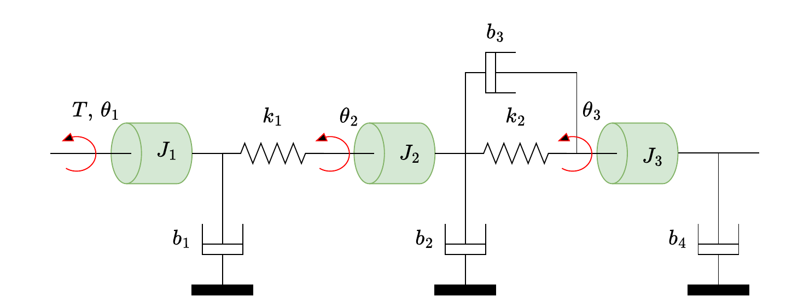
Gears trade speed for torque and impose geometric constraints between angular displacement, velocity, and torque.
Consider the gear pair in Figure 1.29. Gear 1 is the input gear, with radius \(r_1\), tooth count \(N_1\), and angular displacement \(\theta_1\). Gear 2 is the output gear, with radius \(r_2\), tooth count \(N_2\), and angular displacement \(\theta_2\).
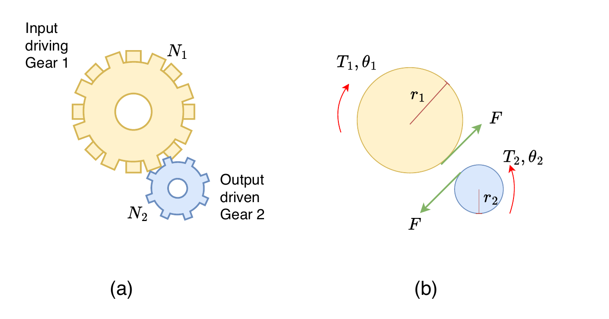
At the point of contact, assuming no slipping, the arc lengths must be equal: \[r_1 \theta_1 = r_2 \theta_2\]
Taking time derivatives yields the angular velocity relationship: \[r_1 \omega_1 = r_2 \omega_2\]
The number of teeth on each gear is proportional to its radius, hence: \[\frac{\theta_2}{\theta_1} = \frac{\omega_2}{\omega_1} = \frac{r_1}{r_2} = \frac{N_1}{N_2}\] where \(N_1/N_2\) is the gear ratio.
At the contact point, the tangential force \(F\) is equal and opposite on both gears. Since torque is the product of force and radius: \[T_1 = F r_1 \qquad T_2 = F r_2\]
Thus, the torque relationship becomes: \[\frac{T_1}{r_1} = \frac{T_2}{r_2} \quad \Rightarrow \quad \frac{T_1}{T_2} = \frac{r_1}{r_2}\]
Therefore, the torque relationship between the two gears becomes: \[\frac{T_2}{T_1} = \frac{r_2}{r_1} = \frac{N_2}{N_1}.\] Assuming there is no frictional loss, \[T_2 = J_2s^2\Theta_2\] Since \(T_1=\frac{r_1}{r_2}T_2\) \[T_1= \frac{r_1}{r_2}T_2= \frac{r_1}{r_2} J_2s^2\Theta_2= \left(\frac{r_1}{r_2}\right)^2 J_2s^2\Theta_1\]
Secondary side inertias and damping coefficients translate to the primary side by multiplying the term by the square of the gear ratio, \(\left(\frac{r_1}{r_2}\right)^2\).
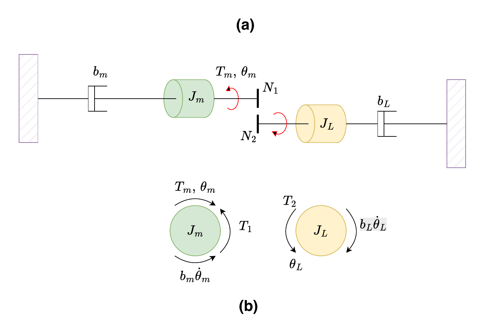
Consider the motor-load system shown in Figure 1.30. A motor with moment of inertia \(J_m\) and viscous damping \(b_m\) drives a load with inertia \(J_L\) and damping \(b_L\) through an ideal gear train with gear ratio \(\dfrac{N_1}{N_2}\), where \(N_1\) and \(N_2\) are the number of teeth on the motor-side and load-side gears respectively. The motor applies torque \(T_m\), and rotates with angular displacement \(\theta_m\), while the load rotates with \(\theta_L\). Derive the transfer functions \(\dfrac{\theta_m(s)}{T_m(s)}\) and \(\dfrac{\theta_L(s)}{T_m(s)}\).
In an ideal gear, angular displacements and torques are related by \[\frac{N_1}{N_2}\theta_m = \theta_L, \qquad T_1 = \frac{N_1}{N_2}\, T_2,\] where \(T_1\) is the torque exerted by the motor gear on the load gear, and \(T_2\) is the torque acting on the load. \(T_1\) appears as a resistive torque in the motor’s dynamics, while \(T_2\) drives the load.
The equation of motion for the load is \[J_L s^2 \theta_L = T_2 - b_L s \theta_L \Rightarrow T_2 = (J_L s^2 + b_L s) \theta_L.\] Substituting \(\theta_L = \frac{N_1}{N_2}\theta_m\) gives \[T_2 = \left(J_L s^2 + b_L s\right) \frac{N_1}{N_2}\theta_m.\] Then \[T_1 = \frac{N_1}{N_2} T_2 = \left (\frac{N_1}{N_2}\right )^2 \cdot \left(J_L s^2 + b_L s\right) \cdot \theta_m\]
The motor’s equation of motion is \[J_m s^2 \theta_m = T_m - b_m s \theta_m - T_1.\] Substituting \(T_1\), \[J_m s^2 \theta_m = T_m - b_m s \theta_m -\left (\frac{N_1}{N_2}\right )^2 \left(J_L s^2 + b_L s\right) \theta_m,\] In terms of the gear ratio, the load inertia and damping reflected to the motor side are \(\left (\frac{N_1}{N_2}\right )^2 J_L\) and \(\left (\frac{N_1}{N_2}\right )^2 b_L\), so the correct reflected equation is \[\left(J_m + \left (\frac{N_1}{N_2}\right )^2 J_L\right) s^2 \theta_m + \left(b_m + \left (\frac{N_1}{N_2}\right )^2 b_L\right) s \theta_m = T_m.\] Define \[J_e = J_m + \left (\frac{N_1}{N_2}\right )^2 J_L, \qquad b_e = b_m + \left (\frac{N_1}{N_2}\right )^2 b_L,\] then \[J_e s^2 \theta_m + b_e s \theta_m = T_m.\]
The transfer functions are \[\frac{\theta_m(s)}{T_m(s)} = \frac{1}{s(J_e s + b_e)}, \qquad \frac{\theta_L(s)}{T_m(s)} = \frac{N_1}{N_2} \cdot \frac{1}{s(J_e s + b_e)}.\]
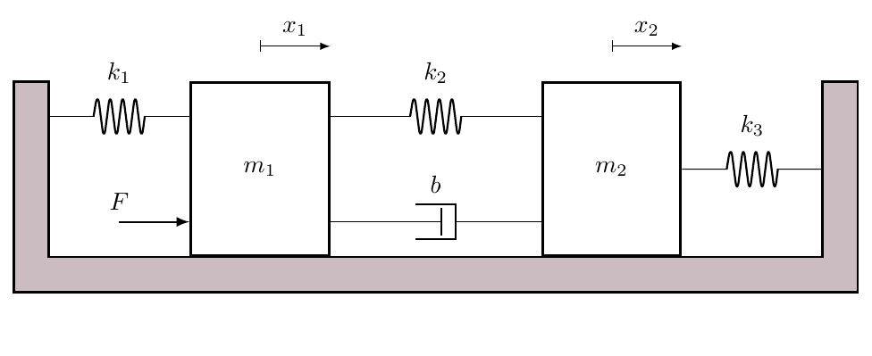
Consider the two mass system and its electrical analogue in Fig. 1.31.
Collecting terms gives the linear system \[\underbrace{\begin{bmatrix} k_1+s^2 m_1+k_2+s b & -(k_2+s b)\\[2pt] -(k_2+s b) & k_3+s^2 m_2+k_2+s b \end{bmatrix}}_{\displaystyle A(s)} \begin{bmatrix} X_1 \\[2pt] X_2 \end{bmatrix} = \begin{bmatrix} F \\[2pt] 0 \end{bmatrix}.\]
Let \(a_{11}=k_1+s^2 m_1+k_2+s b\), \(a_{22}=k_3+s^2 m_2+k_2+s b\), and \(a_{12}=a_{21}=-(k_2+s b)\). With \(\Delta(s)=a_{11}a_{22}-a_{12}a_{21}=(k_1+s^2m_1+k_2+s b)(k_3+s^2m_2+k_2+s b)-(k_2+s b)^2\), the inverse of \(A(s)\) yields \[\begin{bmatrix} X_1 \\ X_2 \end{bmatrix} =\frac{1}{\Delta(s)} \begin{bmatrix} a_{22}& -a_{12}\\ -a_{21} & a_{11} \end{bmatrix} \begin{bmatrix} F \\ 0 \end{bmatrix} =\frac{1}{\Delta(s)} \begin{bmatrix} a_{22}\,F \\ -( - (k_2+s b))\,F \end{bmatrix}.\]
Hence the transfer function from force input to the displacement of the second mass is \[\frac{X_2(s)}{F(s)}= \frac{k_{2}+b\,s}{\Delta(s)}\] where \[\begin{multline*} \Delta(s)= m_{1}m_{2}s^{4} + b\,(m_{1}+m_{2})\,s^{3} + \big[m_{1}(k_{2}+k_{3}) + m_{2}(k_{1}+k_{2})\big] s^{2} \\ + b\,(k_{1}+k_{3})\,s + (k_{1}k_{2}+k_{2}k_{3}+k_{3}k_{1}) \end{multline*}\]
The MATLAB code in Listing [lst:ch3_two_mass_elec_analogue] verifies this result symbolically.
Symbolic verification of \(X_2(s)/F(s)\) for the two-mass electrical-analogue system.
from sympy import symbols, Matrix, simplify, pprint
s, k1, k2, k3, m1, m2, c, F = symbols('s k1 k2 k3 m1 m2 c F', real=True)
A = Matrix([
[k1 + s**2*m1 + k2 + s*c, -(k2 + s*c)],
[-(k2 + s*c), k3 + s**2*m2 + k2 + s*c]
])
b = Matrix([F, 0])
X = A.solve(b) # X = [X1, X2]
X1 = simplify(X[0])
X2 = simplify(X[1])
G = simplify(X2 / F)
print('X1(s):'); pprint(X1)
print('\nX2(s):'); pprint(X2)
print('\nG(s) = X2(s)/F(s):'); pprint(G)syms s k1 k2 k3 m1 m2 c F real
A = [k1 + s^2*m1 + k2 + s*c, -(k2 + s*c);
-(k2 + s*c), k3 + s^2*m2 + k2 + s*c];
b = [F; 0];
X = A\b; % X=[X1; X2]
X1 = simplify(X(1));
X2 = simplify(X(2));
G = simplify(X2/F); Consider the mechanical system in Figure 1.20. The node equations are \[\begin{aligned} m s^{2}X_1 + k(X_1-X_2) &= F,\\ k(X_2-X_1) + b s\,X_2 &= 0 . \end{aligned}\] These can be written compactly as a \(2\times2\) matrix equation \[\underbrace{\begin{bmatrix} ms^{2}+k & -k\\[2pt] -k & k+bs \end{bmatrix}}_{\displaystyle A(s)} \underbrace{\begin{bmatrix} X_1 \\[2pt] X_2 \end{bmatrix}}_{\displaystyle X(s)} = \underbrace{\begin{bmatrix} F \\[2pt] 0 \end{bmatrix}}_{\displaystyle B(s)}.\] Therefore, \(X(s)=A^{-1}(s)B(s)\) The determinant of \(A(s)\) is \[\begin{align*} \Delta(s)=\det A(s)&=(ms^{2}+k)(k+bs)-k^{2}\\ &=ms^{2}(k+bs)+kb s\\ &=mb\,s^{3}+mk\,s^{2}+kb\,s . \end{align*}\] Using \(A(s)^{-1}=\frac{1}{\Delta(s)}\!\begin{bmatrix} k+bs & k\\ k & ms^{2}+k\end{bmatrix}\), \[\begin{bmatrix} X_1 \\[2pt] X_2 \end{bmatrix} =\frac{1}{\Delta(s)} \begin{bmatrix} k+bs & k\\ k & ms^{2}+k\end{bmatrix} \begin{bmatrix} F \\[2pt] 0 \end{bmatrix} =\frac{1}{\Delta(s)} \begin{bmatrix} (k+bs)\,F \\[2pt] k\,F \end{bmatrix}.\] Hence the transfer functions are \[\boxed{\;\frac{X_1(s)}{F(s)}=\frac{k+bs}{mb\,s^{3}+mk\,s^{2}+kb\,s} =\frac{k+bs}{s\,(mb\,s^{2}+mk\,s+kb)}\;}\] \[\boxed{\;\frac{X_2(s)}{F(s)}=\frac{k}{mb\,s^{3}+mk\,s^{2}+kb\,s} =\frac{k}{s\,(mb\,s^{2}+mk\,s+kb)}\;.}\]
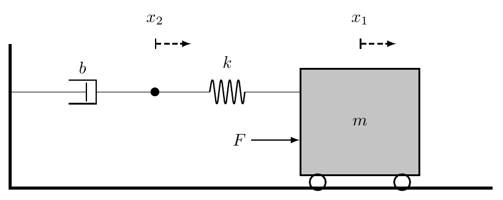
Consider the three-mass mechanical system shown in Figure 1.33. Obtain the equations of motion using the electrical analogy and determine the transfer function from the applied force \(F\) to the displacement \(x_3\).
Let us consider the forces on each mass \(m_i\), \(i=1,\ldots,3\), and apply Newton’s second law to each component. Assume \(m_2\) and \(m_3\) are fixed at \(x_2\) and \(x_3\), respectively, while \(m_1\) moves to the right by an amount \(x_1\). Then Newton’s law gives \[m_1\ddot x_1 = F - k_1x_1-b_1\dot x_1-b_2(\dot x_1-\dot x_3)-k_2(x_1- x_2)\] Similarly, for \(m_2\) and \(m_3\), one can write: \[\begin{align*} m_2\ddot x_2 &=-k_2(x_2-x_1)-k_3(x_2-x_3) \\ m_3\ddot x_3 &=-b_2(\dot x_3-\dot x_1)-k_3(x_3-x_2) \end{align*}\]
Taking the Laplace Transform, the equation of motion can be writen in matrix form as follows:
\[\underbrace{\begin{bmatrix} s^{2}m_{1}+s b_{1}+k_{1}+k_{2}+s b_{2} & -\,k_{2} & -\,s b_{2}\\[4pt] -\,k_{2} & s^{2}m_{2}+k_{2}+k_{3} & -\,k_{3}\\[4pt] -\,s b_{2} & -\,k_{3} & s^{2}m_{3}+k_{3}+s b_{2} \end{bmatrix}}_{\displaystyle A(s)} \begin{bmatrix} X_{1}(s)\\[2pt] X_{2}(s)\\[2pt] X_{3}(s) \end{bmatrix} = \begin{bmatrix} F(s)\\[2pt] 0\\[2pt] 0 \end{bmatrix}.\]
Let \(X(s)=[X_1(s)\;X_2(s)\;X_3(s)]^\top\) and \(A(s)\) be as above. Solving \(A(s)X(s) = [F(s)\;0\;0]^\top\) gives \(G(s)=\dfrac{X_3(s)}{F(s)}\). The MATLAB code in Listing [lst:ch3_triple_mass_symbolic] constructs \(A(s)\) symbolically and computes \(G(s)\), together with its collected numerator and denominator polynomials in \(s\).
For reference, \(G(s)\) can be written compactly as \[G(s)\;=\;\frac{X_3(s)}{F(s)} =\frac{\;k_2k_3 + s\,b_2(k_2+k_3) + s^{3} b_2 m_2\;} {\det A(s)}\] with \(\det A(s)\) being the sixth-order polynomial obtained from expanding the \(3\times 3\) determinant. Because \(\det A(s)\) is lengthy, it is best computed symbolically; the MATLAB code below does exactly that.
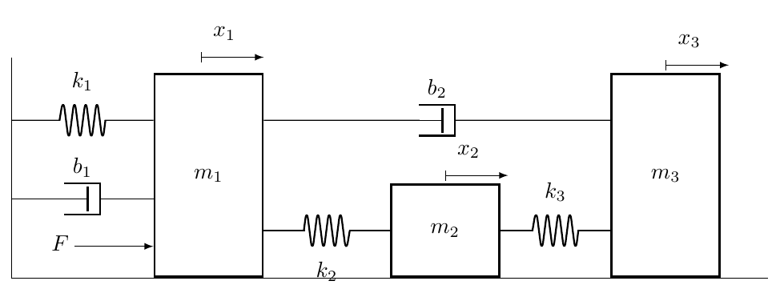
Symbolic computation of \(G(s)=X_3(s)/F(s)\) for the triple-mass system.
from sympy import symbols, Matrix, simplify, fraction, collect, expand, pprint
s, m1, m2, m3, b1, b2, k1, k2, k3, F = symbols(
's m1 m2 m3 b1 b2 k1 k2 k3 F', real=True, positive=True)
A = Matrix([
[s**2*m1 + s*b1 + k1 + k2 + s*b2, -k2, -s*b2],
[-k2, s**2*m2 + k2 + k3, -k3],
[-s*b2, -k3, s**2*m3 + k3 + s*b2]
])
rhs = Matrix([F, 0, 0])
X = simplify(A.solve(rhs)) # [X1, X2, X3]
G = simplify(X[2] / F) # Transfer function X3/F
num, den = fraction(G)
num = collect(expand(num), s)
den = collect(expand(den), s)
print('G(s) = X3(s)/F(s) =')
pprint(G)
print('\nNumerator:')
pprint(num)
print('\nDenominator:')
pprint(den)syms s m1 m2 m3 b1 b2 k1 k2 k3 F real
assumeAlso([m1 m2 m3 b1 b2 k1 k2 k3] > 0)
A = [ s^2*m1 + s*b1 + k1 + k2 + s*b2, -k2, -s*b2;
-k2, s^2*m2 + k2 + k3, -k3;
-s*b2, -k3, s^2*m3 + k3 + s*b2 ];
rhs = [F; 0; 0];
X = simplify(A\rhs); % [X1; X2; X3]
G = simplify(X(3)/F); % Transfer function X3/F
[num, den] = numden(G);
num = collect(expand(num), s);
den = collect(expand(den), s);
disp('G(s) = X3(s)/F(s) ='); pretty(G)
disp('Numerator:'); pretty(num)
disp('Denominator:'); pretty(den)
The electrical–thermal analogy maps temperatures to voltages, heat flows to currents, thermal capacitance to electrical capacitance, and thermal resistance to electrical resistance.
Consider a single-zone enclosure with temperature \(T(t)\), ambient temperature \(T_a(t)\), heat input \(q(t)\) (e.g. from a heater or solar gain), thermal capacitance \(C\) and an overall thermal resistance \(R\) between the enclosure and the ambient environment. The heat-energy balance is
\[C \,\dot T(t) \;=\; \frac{T_a(t)-T(t)}{R} \;+\; q(t),\]
which has exactly the same mathematical form as the first-order \(RC\) equation in the electrical domain.
Taking the Laplace transform (assuming zero initial conditions) gives
\[(Cs + 1/R)\,T(s) \;=\; \frac{T_a(s)}{R} \;+\; Q(s).\]
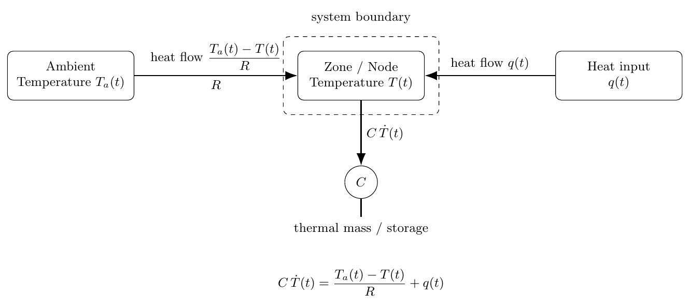
Using the electrical thermal analogy (voltage \(\leftrightarrow\) temperature, current \(\leftrightarrow\) heat flow, resistance \(\leftrightarrow\) thermal resistance, capacitance \(\leftrightarrow\) thermal capacitance), the house in Fig. 1.35 is modelled as an \(RC\) ladder with two thermal nodes: the envelope temperature \(T_e\) (walls/roof/fabric) and the indoor air temperature \(T_i\). Heat inputs are represented by current sources: the heater \(Q_h\) acts directly on the indoor air node, while solar gains \(Q_s\) mainly warm the envelope. The ambient temperature \(T_o\) is a voltage source connected to the envelope through the external resistance \(R_e\); the indoor air exchanges heat with the envelope through the internal resistance \(R_i\). The envelope and indoor air store heat in the capacitances \(C_e\) and \(C_i\) respectively. This structure captures the thermal inertia and time lag of the building fabric and is the thermal counterpart of a two-capacitor, two-resistor \(RC\) network.
Applying energy balance at each node gives the differential equations \[\begin{align} C_i\,\dot T_i(t) &= \frac{T_e(t)-T_i(t)}{R_i} \;+\; Q_h(t), \label{eq:Ti}\\ C_e\,\dot T_e(t) &= \frac{T_i(t)-T_e(t)}{R_i} \;+\; \frac{T_o(t)-T_e(t)}{R_e} \;+\; Q_s(t). \label{eq:Te} \end{align}\] Equations [eq:Ti]–[eq:Te] are first-order \(RC\) balances with units of watts on both sides.
Taking Laplace transforms with zero initial conditions (standard transfer-function assumption) gives \[\begin{align} \big(C_i s + \tfrac{1}{R_i}\big) T_i(s) - \tfrac{1}{R_i}\,T_e(s) &= Q_h(s), \label{eq:Ti_s}\\ -\tfrac{1}{R_i}\,T_i(s) + \big(C_e s + \tfrac{1}{R_i}+\tfrac{1}{R_e}\big) T_e(s) &= \tfrac{1}{R_e}\,T_o(s) + Q_s(s). \label{eq:Te_s} \end{align}\] Solving [eq:Ti_s] and [eq:Te_s] for \(T_i(s)\) yields \[T_i(s)= \frac{\big(C_e s+\tfrac{1}{R_i}+\tfrac{1}{R_e}\big)\,Q_h(s) +\tfrac{1}{R_i}\,Q_s(s) +\tfrac{1}{R_iR_e}\,T_o(s)} {\big(C_i s+\tfrac{1}{R_i}\big)\big(C_e s+\tfrac{1}{R_i}+\tfrac{1}{R_e}\big)-\big(\tfrac{1}{R_i}\big)^2 }.\] Equivalently, the indoor temperature is the superposition of three inputs, \[T_i(s) = G_h(s)\,Q_h(s) + G_s(s)\,Q_s(s) + G_o(s)\,T_o(s),\] with transfer functions \[G_h(s)=\frac{C_e s+\tfrac{1}{R_i}+\tfrac{1}{R_e}}{D(s)},\qquad G_s(s)=\frac{\tfrac{1}{R_i}}{D(s)},\qquad G_o(s)=\frac{\tfrac{1}{R_iR_e}}{D(s)},\] where \[D(s)=\Big(C_i s+\tfrac{1}{R_i}\Big)\Big(C_e s+\tfrac{1}{R_i}+\tfrac{1}{R_e}\Big)-\Big(\tfrac{1}{R_i}\Big)^2.\] These expressions provide \(T_i(s)\) directly in the \(s\)-domain without resorting to a state-space formulation.
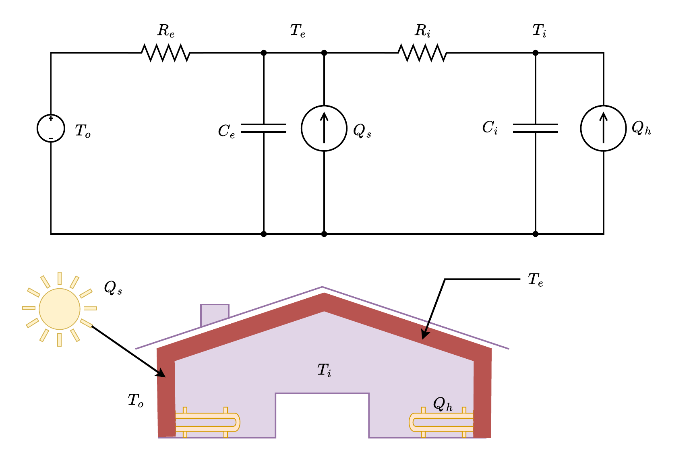
DC motors are common actuators in control: armature current determines torque, input voltage influences speed. They are an ideal example of coupled electrical and mechanical dynamics.
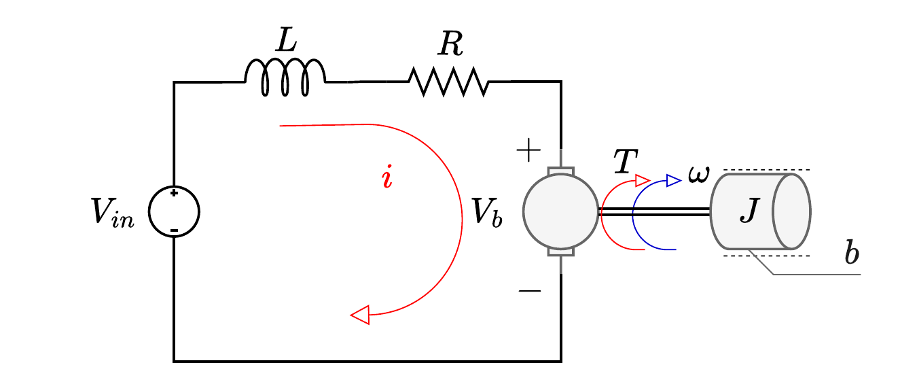
The system shown in Figure 1.36 represents a permanent-magnet DC motor connected to a mechanical load. It is helpful to think of the model as two coupled parts: an electrical subsystem that governs the armature current, and a mechanical subsystem that governs the shaft speed.
The key quantities are the input voltage \(V_{in}\), armature resistance \(R\), armature inductance \(L\), armature current \(i\), back electromotive force \(V_b\), torque constant \(K_m\), back-EMF constant \(K_b\), motor torque \(T\), combined inertia \(J\), viscous friction coefficient \(b\), and shaft angular velocity \(\omega\).
Applying KVL to the armature circuit: \[\begin{equation} V_{in} = L\frac{di}{dt} + Ri + V_{b} \end{equation}\] Newton’s second law for the shaft rotation gives: \[\begin{equation*} T = J\,\dot{\omega} + b\,\omega \end{equation*}\] The electrical and mechanical subsystems are linked by two constitutive laws. The motor torque is proportional to the armature current: \[\begin{equation*} T = K_{m}i. \end{equation*}\] The back EMF is proportional to the shaft speed: \[\begin{equation*} V_{b} = K_{b}\,\omega. \end{equation*}\] In SI units, the torque constant and back EMF constant are numerically equal: \(K_m = K_b\).
Taking the Laplace transform (zero initial conditions):
The E.O.M.s become: \[\begin{align*} (Ls + R)I(s) + V_b(s) &= V_{in}(s) \\ T(s) &= K_m I(s) \\ (Js + b)\Omega(s) &= T(s) \\ V_b(s) &= K_b \Omega(s) \end{align*}\] where \(I(s)\), \(V_{in}(s)\), \(V_b(s)\), \(T(s)\), and \(\Omega(s)\) are the Laplace transforms of the corresponding time-domain variables.
From these algebraic equations, we can read off several useful intermediate transfer relationships: \[\frac{I(s)}{V_{in}(s)-V_b(s)} = \frac{1}{Ls+R}, \qquad \frac{T(s)}{I(s)} = K_m,\] \[\frac{\Omega(s)}{T(s)} = \frac{1}{Js+b}, \qquad \frac{V_b(s)}{\Omega(s)} = K_b.\]
We eliminate \(I(s)\), \(T(s)\), and \(V_b(s)\) to obtain the overall transfer function \(\Omega(s)/V_{in}(s)\).
Expressing the current as a function of speed: \[\begin{align*} K_m I(s) &= (Js + b)\Omega(s) \\ \implies I(s) &= \frac{Js + b}{K_m}\Omega(s) \label{eq:I_of_omega} \end{align*}\]
Hence \[\begin{align*} V_{in}(s) &= (Ls + R) \left( \frac{Js + b}{K_m}\Omega(s) \right) + K_b \Omega(s) \end{align*}\] Factoring out \(\Omega(s)\): \[\begin{align*} V_{in}(s) &= \left[ \frac{LJs^2 + (Lb + RJ)s + Rb + K_m K_b}{K_m} \right] \Omega(s) \end{align*}\] The transfer function from input voltage to angular velocity is: \[G(s) = \frac{\Omega(s)}{V_{in}(s)} = \frac{K_m}{LJs^2 + (Lb + RJ)s + (Rb + K_m K_b)}\] The denominator is the characteristic polynomial; its roots determine the damping ratio and natural frequency of the motor’s response.
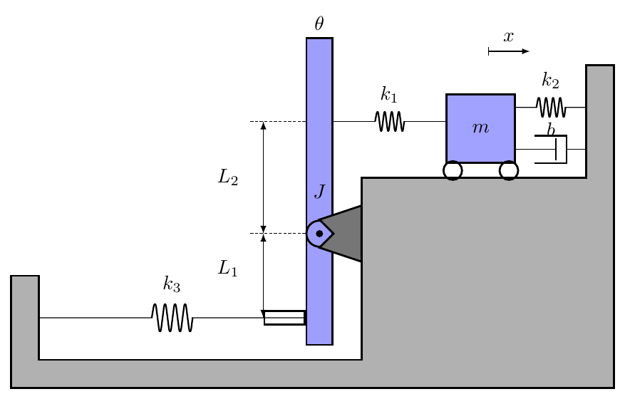
This example demonstrates the derivation of the equations of motion for the coupled mechanical system shown in Figure 1.38. We define the translational coordinate of the cart as \(x\) (positive to the right) and the rotational coordinate of the link as \(\theta\) (positive clockwise).
Applying Newton’s Second Law for the translation of mass \(m\) yields: \[\begin{align*} \sum F_x &= m\ddot{x} \\ -k_1(x - L_1\sin\theta) &- k_2x - b\dot{x} = m\ddot{x} \end{align*}\] Rearranging gives the first equation of motion: \[\begin{equation*} m\ddot{x} + b\dot{x} + (k_1 + k_2)x - k_1L_1\sin\theta = 0 \end{equation*}\]
For the rotation of the link with moment of inertia \(J\) about its pivot, the sum of torques gives: \[\begin{align*} \sum \tau &= J\ddot{\theta} \\ k_1(x - L_1\sin\theta)L_1\cos\theta &- k_3(L_2\sin\theta)L_2\cos\theta = J\ddot{\theta} \end{align*}\] Rearranging gives the second equation of motion: \[\begin{equation*} J\ddot{\theta} + (k_1L_1^2 + k_3L_2^2)\sin\theta\cos\theta - k_1L_1x\cos\theta = 0 \end{equation*}\]
For control system analysis, it is often useful to linearize the system about its equilibrium position (\(\theta = 0\)). Using the small angle approximations, \(\sin\theta \approx \theta\) and \(\cos\theta \approx 1\), the equations become: \[\begin{gather*} m\ddot{x} + b\dot{x} + (k_1 + k_2)x - k_1L_1\theta = 0 \\ J\ddot{\theta} - k_1L_1x + (k_1L_1^2 + k_3L_2^2)\theta = 0 \end{gather*}\]
These linearized equations can be conveniently expressed in the standard matrix form \({M\ddot{q} + C\dot{q} + Kq = 0}\), where the generalized-coordinate vector is \({q} = \begin{bmatrix} x & \theta \end{bmatrix}^T\).
\[\begin{equation*} \begin{bmatrix} m & 0 \\ 0 & J \end{bmatrix} \begin{bmatrix} \ddot{x} \\ \ddot{\theta} \end{bmatrix} + \begin{bmatrix} b & 0 \\ 0 & 0 \end{bmatrix} \begin{bmatrix} \dot{x} \\ \dot{\theta} \end{bmatrix} + \begin{bmatrix} k_1+k_2 & -k_1L_1 \\ -k_1L_1 & k_1L_1^2 + k_3L_2^2 \end{bmatrix} \begin{bmatrix} x \\ \theta \end{bmatrix} = \begin{bmatrix} 0 \\ 0 \end{bmatrix} \end{equation*}\]
To obtain a first-order linear state-space model, define the state vector \[z = \begin{bmatrix} x \\ \dot{x} \\ \theta \\ \dot{\theta} \end{bmatrix}.\] From the linearized equations, \[\ddot{x} = -\frac{b}{m}\dot{x} - \frac{k_1+k_2}{m}x + \frac{k_1L_1}{m}\theta, \qquad \ddot{\theta} = \frac{k_1L_1}{J}x - \frac{k_1L_1^2+k_3L_2^2}{J}\theta.\] Therefore, the linear state-space equations are \[\dot{z} = Az,\] with \[A= \begin{bmatrix} 0 & 1 & 0 & 0 \\ -\dfrac{k_1+k_2}{m} & -\dfrac{b}{m} & \dfrac{k_1L_1}{m} & 0 \\ 0 & 0 & 0 & 1 \\ \dfrac{k_1L_1}{J} & 0 & -\dfrac{k_1L_1^2+k_3L_2^2}{J} & 0 \end{bmatrix}.\] If we choose the cart displacement and link angle as outputs, then \[y = Cz, \qquad C= \begin{bmatrix} 1 & 0 & 0 & 0 \\ 0 & 0 & 1 & 0 \end{bmatrix}, \qquad D=0.\]
Try it yourself Once you have derived a transfer function from physical laws, MATLAB lets you simulate its behaviour in just a few lines. Listing [lst:ch3_msd_simulation] creates a mass-spring-damper system and plots its step response and response to a custom force input.
Simulating a mass-spring-damper transfer function in Python.
import numpy as np
import matplotlib.pyplot as plt
import control as ctrl
# Transfer function: G(s) = 1 / (m*s^2 + b*s + k)
m = 1
b = 3
k = 2 # system parameters
G = ctrl.tf(1, np.array([m, b, k])) # create transfer function
# Step response: apply a unit step force and see displacement
_resp = ctrl.step_response(G, 10)
t_step, y_step = _resp.time, _resp.outputs # simulate for 10 seconds
plt.figure()
plt.plot(t_step, y_step)
plt.title('Mass-Spring-Damper Step Response')
plt.xlabel('Time (s)')
plt.ylabel('Displacement')
plt.grid(True)
plt.show()
# Custom input: ramp force F(t) = 2t for 5 seconds
t = np.arange(0, 5.01, 0.01) # time vector
F = 2 * t # ramp force input
_resp = ctrl.forced_response(G, t, F)
t_out, y_out = _resp.time, _resp.outputs # simulate with custom input
plt.figure()
plt.plot(t_out, y_out)
plt.title('Response to Ramp Force F(t) = 2t')
plt.xlabel('Time (s)')
plt.ylabel('Displacement')
plt.grid(True)
plt.show()
# Display poles to check system behaviour
print('System poles:')
print(ctrl.poles(G))% Transfer function: G(s) = 1 / (m*s^2 + b*s + k)
m = 1; b = 3; k = 2; % system parameters
G = tf(1, [m b k]); % create transfer function
% Step response: apply a unit step force and see displacement
figure;
step(G, 10); % simulate for 10 seconds
title('Mass-Spring-Damper Step Response');
grid on;
% Custom input: ramp force F(t) = 2t for 5 seconds
t = 0:0.01:5; % time vector
F = 2*t; % ramp force input
figure;
lsim(G, F, t); % simulate with custom input
title('Response to Ramp Force F(t) = 2t');
grid on;
% Display poles to check system behaviour
disp('System poles:');
pole(G)Key Takeaways
A transfer function \(G(s) = Y(s)/U(s)\) captures the input–output dynamics of an LTI system under zero initial conditions.
Electrical circuits are modelled using KVL/KCL with component relations, or more efficiently via the impedance method (\(Z_R = R\), \(Z_L = sL\), \(Z_C = 1/(sC)\)).
Translational mechanical systems use \(F = ma\) with springs (\(Kx\)), dampers (\(b\dot{x}\)), and masses (\(m\ddot{x}\)); rotational systems follow the same pattern with torque, angle, and inertia.
Gears impose the constraint \(\theta_L/\theta_m = N_1/N_2\), and load-side inertia and damping reflect to the motor side scaled by the square of the gear ratio.
The DC motor transfer function \(\Omega(s)/V_{in}(s) = K_m / [LJs^2 + (Lb+RJ)s + (Rb+K_mK_b)]\) couples electrical and mechanical dynamics.
The electrical–thermal analogy allows RC-network methods to model heat flow in buildings, devices, and thermal systems.
Multi-body systems lead to matrix equations \(A(s)\,X(s) = B(s)\) that can be solved symbolically or numerically in MATLAB.
Series RLC circuit. For a series RLC circuit with \(R=4\;\Omega\), \(L=1\;\text{H}\), \(C=\tfrac{1}{3}\;\text{F}\), and the output taken across the capacitor:
Write the differential equation relating \(v_C(t)\) to the input voltage \(v(t)\).
Derive the transfer function \(G(s) = V_C(s)/V(s)\).
Find the poles of the system and classify them (real distinct, repeated, or complex).
Verify your transfer function in MATLAB using tf() and pole().
Mass–spring–damper. A mass \(m=2\;\text{kg}\) is attached to a spring with stiffness \(k=8\;\text{N/m}\) and a damper with coefficient \(b=4\;\text{Ns/m}\). An external force \(F(t)\) is applied to the mass. Taking displacement \(x(t)\) as the output:
Draw a free-body diagram and write the equation of motion.
Derive \(G(s) = X(s)/F(s)\).
Use MATLAB to plot the step response. What is the steady-state displacement for a unit step force?
Two-mass system. Two masses \(m_1 = 1\;\text{kg}\) and \(m_2 = 2\;\text{kg}\) are connected by a spring \(k = 5\;\text{N/m}\). A force \(F(t)\) is applied to \(m_1\) only. Write the equations of motion for both masses and express them in Laplace-domain matrix form \(A(s)\begin{bmatrix}X_1\\X_2\end{bmatrix} = \begin{bmatrix}F\\0\end{bmatrix}\).
Gear ratio. A motor with inertia \(J_m = 0.01\;\text{kg}\,\text{m}^2\) drives a load with inertia \(J_L = 1\;\text{kg}\,\text{m}^2\) through a gear train with \(N_1 = 10\) teeth (motor side) and \(N_2 = 50\) teeth (load side). Neglect damping.
Compute the equivalent inertia \(J_e\) referred to the motor side.
Find the transfer function \(\theta_m(s)/T_m(s)\).
Find the transfer function \(\theta_L(s)/T_m(s)\).
Rotational system. A disc with moment of inertia \(J = 0.5\;\text{kg}\,\text{m}^2\) and rotational damping \(b = 2\;\text{Nm}\,\text{s/rad}\) is driven by a torque \(T(t)\). Derive the transfer function \(\Theta(s)/T(s)\) and find the time constant.
Thermal system. A room has thermal capacitance \(C = 5000\;\text{J/}^\circ\text{C}\) and thermal resistance \(R = 0.2\;{}^\circ\text{C/W}\) to the outside environment. A heater supplies heat \(q(t)\) watts.
Write the first-order ODE governing the room temperature deviation from ambient.
Derive the transfer function \(T(s)/Q(s)\) and identify the time constant.
If the heater applies a constant 500 W step input, what is the steady-state temperature rise?
Op-amp integrator. An inverting op-amp circuit has input resistor \(R = 10\;\text{k}\Omega\) and feedback capacitor \(C = 1\;\mu\text{F}\). Derive the transfer function \(V_{out}(s)/V_{in}(s)\) and verify that it acts as an integrator.
MATLAB verification. For the mass–spring–damper in Exercise 2, use lsim() to simulate the response to a ramp input \(F(t) = 3t\) over the interval \([0, 10]\) seconds. Plot the result and comment on the steady-state behaviour.